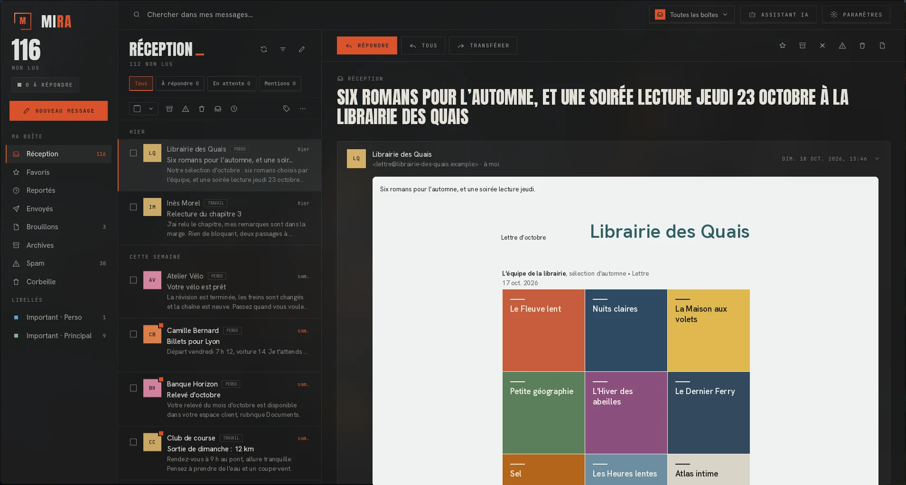

Look
Un peu de caractère
Grands titres, angles droits, une seule couleur vive. Thème sombre ou clair, en français ou en anglais.
MIRA lit et envoie vos mails, sur Linux et sur Android. Je l'ai faite parce que les clients mail que j'ai trouvés sous Linux ne me plaisaient pas : trop austères, payants, ou coincés dans un navigateur.
Linux · Android · Gratuit · Licence MIT

Look
Grands titres, angles droits, une seule couleur vive. Thème sombre ou clair, en français ou en anglais.
Couleurs
Choisissez la couleur d'accent, ou laissez MIRA prendre celles de votre fond d'écran.
Comptes
Gmail, Outlook, Yahoo ou n'importe quel serveur IMAP, avec une réception unifiée si vous le voulez.
Hors ligne
Vos mails sont copiés sur votre appareil. Lisez et répondez dans le train : tout part au retour du réseau.
Au quotidien
Recherche dans tout le texte, reporter un mail à plus tard, annuler un envoi, programmer un message, raccourcis clavier.
Vie privée
Aucun serveur MIRA. Les images distantes et les traceurs sont bloqués tant que vous ne les autorisez pas.
Debian, Ubuntu, Mint, Pop!_OS
mira-mail_1.0.1_amd64.deb TéléchargerPuis, dans un terminal
sudo apt install ./mira-mail_1.0.1_amd64.debFedora, RHEL, Rocky, Alma, openSUSE
mira-mail-1.0.1-1.x86_64.rpm TéléchargerPuis, dans un terminal
sudo dnf install ./mira-mail-1.0.1-1.x86_64.rpmToute distribution Linux
MIRA-1.0.1-x86_64.AppImage TéléchargerPuis, dans un terminal
chmod +x MIRA-1.0.1-x86_64.AppImage && ./MIRA-1.0.1-x86_64.AppImageArch, Manjaro, EndeavourOS
mira-mail-1.0.1-x86_64.tar.gz TéléchargerPuis, dans un terminal
tar xzf mira-mail-1.0.1-x86_64.tar.gzTéléphones Android 7 et suivants
mira-mail-1.0.1-android-arm64-v8a.apk TéléchargerInstaller et mettre à jour · Linux, sans sudo
curl -fsSL https://github.com/nnoah29/MIRA/releases/latest/download/install.sh | bashRelancez la même commande pour passer à la dernière version.
Linux : glibc 2.34 ou plus récente (Ubuntu 22.04, Debian 12, Fedora 35 et suivantes) et GTK 3. Pour ranger les mots de passe, un trousseau comme GNOME Keyring ou KWallet. Sommes de contrôle publiées avec chaque version.